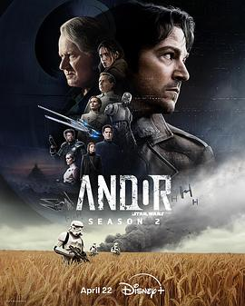

8.9
安多 第二季
Andor Season 2
2025
美国
评分 8.9
导演:
阿里尔·克莱曼 / 扬努斯·梅兹 / 阿隆索·帕拉西奥斯
演员:
迭戈·卢纳 / 斯特兰·斯卡斯加德 / 吉娜薇·欧瑞丽 / 丹妮斯·高夫 / 凯尔·索列尔 / 阿德里娅·阿霍纳 / 本·门德尔森
类型:
冒险,动作,科幻
剧情简介
在帝国压迫的阴影中，卡西安·安多（Diego Luna 饰）已从逃亡雇佣者成长为义军的核心支柱。他经历了荒芜星球费里克斯的起义、秘密任务的锤炼、同伴的牺牲与信念的觉醒。第二季从帝国即将失控的四年间拉开帷幕：安多潜伏在帝国内部，伪装为试飞员，窃取先进战机为反抗联盟所用；与此同时，参议员莫芙玛（Genevieve O’Reilly 饰）在政治迷局中暗中筹建反抗力量，而帝国安全局不断收紧网索，将一个从雇佣兵到革命者的人成为焦点。剧情横跨数年，每三集构成一个关键节点：从农场的躲藏、劳役月球的逃亡、到内战爆发的星球街头、再到宇宙最致命武器的秘密揭露。安多逐渐发现，“英雄”从来不是孤独登场，而是在不断选择中自我定义。他在黑暗中伸出手，却不知道前方是救赎亦或毁灭。镜头下，我们看见他的决断、恐惧、愤怒与坚持——他不是为了奖章，而是因无法忍受沉默。本季将故事带入 Rogue One: A Star Wars Story 的前夕，反抗的火种在黑暗中爆燃。背景中，帝国的官僚冷酷、压迫无处不在；义军的集结艰难、失误频出。然而，安多与同伴选择的每一次越界，都可能成为改变银河系命运的那一步。